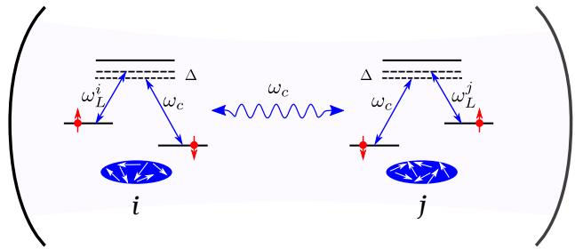
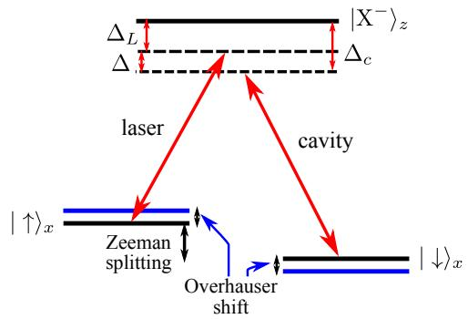
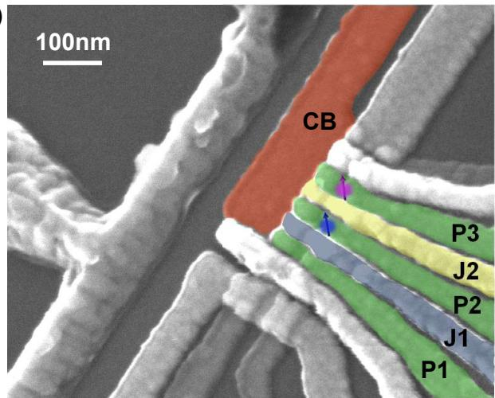
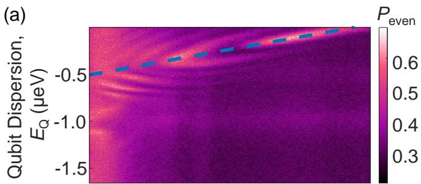
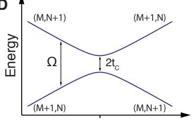
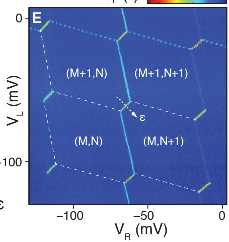

物理问题：为什么自旋难直接耦合腔
电子自旋量子比特具有毫秒到秒量级的相干时间，是电路量子电动力学（cQED）中天然的长寿命二能级。然而自旋的磁偶极跃迁矩阵元约 ，对应的自发辐射速率约 ，与典型腔场增强的真空 Rabi 频率 MHz 量级相差甚远——直接磁偶极耦合在现有微波谐振腔中不可能实现强耦合。
工程上把”自旋–腔接口”拆成两步：先把腔电场转成电子能看到的自旋信号，再把自旋信号馈回腔。两种主流机制是：
- 微磁体梯度诱导电偶极自旋共振（EDSR）：在量子点上方集成微磁体，由其磁场梯度 把交流电场下的电子位移转换为有效横向磁场，电子在 与 之间的隧穿过程遂可翻转自旋。代表材料是 Si/SiGe 平面异质结和 Si/SiGe 三量子点。
- 内禀自旋–轨道耦合诱导混合：在锗纳米线、应变锗量子阱、碳纳米管等强自旋–轨道材料里，自旋态本身已带轨道分量，电偶极对自旋态的矩阵元自动非零。
两种机制的本质相同：自旋–光子耦合 总是正比于电荷–光子耦合 乘以一个自旋–电荷混合因子。
模型哈密顿量
单电子哈密顿量与梯度场
把双量子点中一个电子在自旋–轨道–电荷混合下的哈密顿量写为（ 公式 2.17，对应单电子体系）
其中 为左右量子点能级差、 为点间隧穿耦合； 是轨道泡利算符， 是自旋泡利算符； 为外加静磁场在量子点处的纵向分量， 是微磁体产生的与 垂直的横向磁场分量。同一论文公式 2.18 给出腔场与电荷态的耦合项
在自旋–轨道基 下展开，并对角化得四个本征能量与对应本征态；自旋–轨道混合角 ，其中 。
耦合矩阵元与 公式
展开后电偶极矩阵元为（ 公式 2.26–2.27）
其中 由外磁场与微磁体磁场决定。自旋–光子耦合强度 与电荷–光子耦合 的关系（ 公式 2.28）为
即 随微磁体在量子点处产生的横向梯度场 线性增长。代价是当 时 的趋势受到自旋退相干 同步增大的限制——工程上必须在耦合与退相干之间权衡选择工作点。
的输入–输出推导
以电偶极近似给出更系统的描述。相互作用哈密顿量
作用于四态电荷基 上，矩阵元 满足反对称结构。在 条件下
由此得到强自旋–光子耦合条件与简化形式：
关键比例
表明：
- 自旋–光子耦合 与电荷–光子耦合 同号、随 增强；
- 自旋退相干 随 增强更快，强电荷–光子耦合不是强自旋–光子耦合的充分条件；
- 减小分母 （即把隧穿耦合与腔频调到同一尺度）是同时获得较大 与可接受 的关键。
空穴自旋体系：自旋轨道长度
锗空穴的自旋–光子耦合经内禀自旋–轨道耦合而来。在双量子点零失谐附近，给出的形式为
其中 为单量子点轨道能级间隔、 为塞曼能、 为零失谐处的比特能级、 为双量子点中心间距、 为自旋–轨道长度（ 越小耦合越强）、 为单量子点尺寸。
在双量子点最大杂化点 ，代入论文参数（，，，，）得到
在 区，电子局域于单量子点内，耦合形式简化为
代入同样参数得到 ，与 InAs 纳米线体系的 同量级。
三类工程实现
Si/SiGe：微磁体 + 高阻抗腔
硅基单自旋量子比特与微波腔的直接电偶极耦合极弱（），工程上用微磁体梯度把电子位移转换成 EDSR 驱动。2017 年 Vandersypen 组在 Si 上首次实现自旋–光子强耦合（）；2018 年 Petta 组在 Si 双量子点上独立演示 （ 综述）。
关键经验：
- 微磁体间隙与磁化方向决定梯度强弱与符号， 论文综述了 Tarucha 组（GaAs）和 Petta 组（Si/SiGe）的横向–纵向梯度优化；
- 微磁体同时引入垂直外磁场的”有害梯度”，使自旋态更易受电场噪声影响； 论文给出退相干提升约 3 个数量级的优化微磁体设计。
Si/SiGe 三量子点：翻转模式量子比特
翻转模式（flopping-mode）量子比特把电子轨道波函数锁定在双量子点零失谐附近的成键态，对交流电场响应最大，电偶极自然放大。 在 Si/SiGe 三量子点中依次编码两个翻转模式比特并实现与同一 TiN 高阻抗腔的强耦合：
| 比特位置 | 备注 | ||||
|---|---|---|---|---|---|
| RDQD（直接接腔） | 9.4 GHz | 43.5 MHz | 4.6 MHz | 7.5 MHz | |
| LDQD（无直接电极） | 8.0 GHz | 27.6 MHz | 2.2 MHz | 6.8 MHz |
RDQD 中测得的 43.5 MHz 真空 Rabi 劈裂，是目前 Si/SiGe 平台自旋–光子强耦合的最高纪录之一；LDQD 没有腔电极直接相连，证明同一腔可在更大空间范围内耦合多个翻转模式比特，为腔介导远程耦合奠定硬件基础。
Ge 空穴：内禀自旋轨道耦合
锗空穴载流子由于 轨道成分，自旋–轨道耦合强度远高于 III–V 与硅（Ge/Si 核壳纳米线 ，–）。锗空穴比特因此可在不集成微磁体的情况下完成全电操控，同时为自旋–光子耦合提供另一条不依赖外加梯度场的路径。
| 体系 | 评估 | 来源 | ||
|---|---|---|---|---|
| 锗纳米线双量子点（） | 15 MHz | 3 MHz | 约 10 MHz（理论预测） | |
| 锗纳米线单量子点（$ | \varepsilon | \gg 2t_c$） | 15 MHz | 0.22 MHz |
| 锗硅自组织纳米线单量子点 | 几十 MHz | 接近强耦合水平 | — | |
| 应变锗空穴–腔耦合 | — | 体系可拓展到翻转模式 | — | |
| Si/SiGe 翻转模式（LDQD） | — | 27.6 MHz | 2.2 MHz |
首次在锗硅自组织纳米线单量子点上利用载流子压缩系数与耦合电容提取 ，并进一步评估该体系下自旋–腔耦合”接近强耦合水平”； 进一步在应变锗体系中引入镂空结构谐振腔以抑制界面缺陷引入的额外耗散，为高 腔上获得强自旋–光子耦合提供器件方案。
强自旋–光子耦合的实验判据
进入强耦合区要求相干交换速率快于腔耗散与自旋退相干之和的一半。对自旋比特，判据可写为
其中 是与电荷比特耦合后腔的有效展宽。频域证据是真空 Rabi 劈裂，间距 的两条谱线在线宽 的包络内可分辨；时域证据是激发在 与 之间的真空 Rabi 振荡。
注意两点工程细节：
- 裸腔线宽 vs 杂化后线宽：当电荷比特已耦合到腔、腔线宽已从 拓宽到 时，再观察自旋耦合必须用 而非 ；
- Fano 修正：高阻抗腔的细中心导体易与寄生通道耦合，谱线常偏离对称洛伦兹形，未做 Fano 修正会系统低估 。
超精细场对腔介导耦合的修正
III-V 量子点里的电子自旋与核自旋的超精细相互作用（见超精细相互作用）不只带来退相干——它还改变腔介导的自旋-自旋耦合本身。把超精细相互作用微扰展开到二阶，腔模与量子点电子自旋的有效耦合强度变为
其中 是电荷-光子耦合、 是含时拉比驱动幅度、 是第 个点上的 Overhauser 场（核自旋有效磁场），它同时移动自旋 Zeeman 频率（改变失谐 ）与耦合强度。两个失谐差匹配的量子点交换虚腔光子实现远程耦合——但 Overhauser 场的随机演化使两比特门的保真度随核态构型涨落：从非极化核系综出发，门保真度的分布直接反映 Overhauser 场的统计。这一修正在设计 III-V 体系的腔介导两比特门时必须计入（Si 体系核自旋小，此项可忽略）。

腔模介导的自旋-自旋相互作用：两个量子点的失谐差 匹配时交换虚腔光子（能量 ）； 是各点自旋的 Zeeman 频率——Overhauser 场随机移动这些频率，使有效耦合与门保真度随核态构型涨落。图源：Hildmann & Burkard (2011)，Fig. 1。

单电子量子点与腔耦合的能级图：电子自旋经拉比驱动 与腔模间接耦合，失谐 、 都依赖 Overhauser 场 ——超精细相互作用到二阶的修正进入有效耦合强度。图源：Hildmann & Burkard (2011)，Fig. 2。
内禀自旋轨道的横/纵耦合方法（无微磁体路线）：硅量子点的残余自旋轨道耦合（界面 Rashba+Dresselhaus）可以直接构造横向（色散读出型 ）与纵向（弛豫型 ）自旋-光子耦合——电场调制量子点位置使波函数采样 SOC 梯度，无需额外磁性元件。28Si 中残余 SOC 虽弱，但通过点位置优化可达可用耦合强度——与微磁体路线形成”无磁”对照（对磁场敏感的兼容场景）。

内禀 SOC 的耦合构造：量子点位置电场调制的横/纵向自旋-光子耦合——无微磁体路线。图源：Guo et al. (2023)，Fig. 1。

耦合强度的参数依赖：SOC 梯度采样与点尺寸/位置的联合优化——28Si 中可达的耦合窗口。图源：Guo et al. (2023)，Fig. 2。
开创性的综合论述：cQED 与自旋比特结合的早期系统理论（2006，满谷/谢系）——量子总线架构扩展到自旋自由代的完整分析：单比特/两比特动力学、与 Wallraff/Schuster 实验的对接。词条作为该领域的文档化记录，此文是理论源头之一。

cQED-自旋比特的早期理论框架：量子总线架构的自旋扩展——词条理论源头文献。图源：满谷/谢系 (2006)，Fig. 1。

单/两比特动力学：理论预测与早期实验的对接。图源：满谷/谢系 (2006)，Fig. 2。
参数与量级
下表汇总本站论文中所列工作中实际演示或理论评估的自旋–光子耦合参数。电荷–光子耦合 、自旋–光子耦合 、腔耗散 与自旋退相干 是四个核心参数。
| 体系 | 自旋比特编码 | （评估/实测） | 来源 | |||
|---|---|---|---|---|---|---|
| Si/SiGe 单自旋 + 微磁体 | LD 单自旋 | — | 约 5–11 MHz（实验） | 1–5 MHz | 2.4–2.5 MHz | 综述 |
| Si/SiGe 翻转模式 RDQD + TiN 3.5 kΩ 腔 | flopping-mode | 175 MHz（） | 21.8 MHz（）， MHz（实测） | 7.5 MHz（杂化后） | 4.6 MHz | |
| Si/SiGe 翻转模式 LDQD + TiN 3.5 kΩ 腔 | flopping-mode | 同上 | 13.8 MHz（）， MHz（实测） | 6.8 MHz（杂化后） | 2.2 MHz | |
| Si/SiGe 三量子点 RX 比特 + TiN 腔 | 共振交换 | 168 MHz（） | 65 MHz（） | — | 16.9 MHz | |
| 锗纳米线双量子点（） | 空穴自旋（理论） | 15 MHz（实测） | 约 3 MHz（评估） | 6.6 MHz | 约 10 MHz（理论） | |
| 锗纳米线单量子点（$ | \varepsilon | \gg 2t_c$） | 空穴自旋（理论） | 15 MHz（实测） | 0.22 MHz（评估） | 6.6 MHz |
| 锗硅自组织纳米线单量子点 | 空穴自旋 | 几十 MHz | 接近强耦合水平（评估） | — | — | |
| InAs 纳米线 | 空穴/电子自旋（理论） | — | 约 0.2 MHz | — | — | 引用 |
量级判读：
- 且 才算进入强耦合区。的 43.5/7.5≈5.8、43.5/4.6≈9.5 两组比值都远高于 1，是强耦合的硬证据。
- 自旋–光子强耦合的瓶颈常不在 ，而在腔的杂化展宽 ：电荷比特已耦合到同一腔之后， 显著增大。提高 值（高阻抗腔的 TiN 路线、镂空结构等）能直接改善 ，从而释放更多 余量。
- 锗空穴体系当前 比 Si/SiGe 微磁体路线小 1–2 个数量级，但具备无需集成微磁体、可全电控、易于二维扩展的天然优势，是中长期自旋–光子耦合阵列的候选。
实验特征与测量
频域：真空 Rabi 劈裂
对自旋比特，测量方法与电荷比特基本相同：固定腔探测频率 ，扫描外磁场 让自旋的塞曼频率 扫过 。当 时，腔透射/反射谱分裂为两条相距 的杂化支，劈裂大小可直接读出 。 在 RDQD 中以 实现共振，测得 。
时域：Rabi 振荡与 Ramsey 干涉
翻转模式自旋比特可在 RDQD 上做 Rabi 振荡。Rabi 频率 反映微磁体横向梯度与驱动幅度的乘积；拉姆齐干涉提取纯退相位时间 。翻转模式比单点 EDSR 低 3 个数量级的驱动功率、更高的品质因子。
测量带宽限制
当 接近或超过自旋驱动带宽时，传统双色脉冲测量会受限于腔的滤波特性；强自旋–光子耦合系统中常借助 Rabi–Ramsey 分离脉冲序列把驱动和读出解耦，避免腔带宽把读出信号压平。
适用边界与权衡
- 反旋项：当 时JC 模型失效，需回到完整 Rabi 模型。 论文中电荷比特已达 边缘，但 仍远小于 0.1，JC 框架仍准确。
- 电荷噪声–耦合折中：， 越大电荷噪声引入的自旋退相干越大；强耦合要求 足够大、 足够长，二者同时由栅极结构与材料质量决定。
- 磁场兼容性：自旋比特需面内磁场区分自旋态；SQUID 阵列腔对磁场敏感、不兼容；TiN、NbTiN 等高 超导材料腔是自旋比特实验的主流（见高阻抗谐振腔），进一步用薄膜几何与涡旋钉扎孔阵把 保持到面内 6 T 的工程方案见耐磁场超导谐振腔。
- 多比特共享腔：多个自旋比特共享同一微波腔时，色散区可推出有效交换作用 （见腔介导远程耦合）；但多比特 大小不一、频率拥挤时，需仔细设计失谐与色散读出频点。
- 替代路线：SOT 磁化翻转、单光子辅助的 EDSR、或借助杂化比特等机制可在不同边界条件下避开微磁体，但仍要求某种形式的自旋–电荷混合。
与其他概念的关系
- JC 模型是描述自旋–光子耦合的基本框架；色散极限给出色散读出与腔介导远程耦合的判据。
- 电荷–光子耦合是自旋–光子耦合的硬件基础： 决定了上限。
- 高阻抗谐振腔通过 同时放大 与 ；TiN 3.5 kΩ 腔的 是当前自旋比特强耦合演示的硬件支撑。
- 微磁体是 Si/SiGe 路线中引入自旋–电荷混合的核心元件；其梯度场是 的物理来源。
- EDSR是单个自旋通过自旋–电荷混合翻转的机制，与自旋–光子耦合共用同一套混合机制：两者都从 经同一矩阵元 转换而来。
- 翻转模式量子比特在双量子点零失谐点把 推高一个数量级，是目前 Si/SiGe 平台上自旋–光子强耦合的最高 来源。
- 共振交换量子比特可与腔直接耦合，避免微磁体集成； 在 Si/SiGe 三量子点上测得 。
- 空穴自旋量子比特利用内禀自旋–轨道耦合，可省去微磁体；、 在锗纳米线和应变锗上评估 。
- 强耦合判据给出 的实验指标； 论文以 为自旋比特的对应判据。
参考文献
- 硅中自旋–光子强耦合的里程碑实验：Samkharadze et al., Science 359, 1123 (2018)；空穴体系见 Hendrickx et al., Nature 591, 580 (2021) 及文献库内锗–腔耦合工作。
完整文献库（含各篇站内全文页）见 参考文献库。